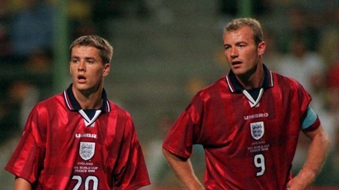

Alan in Blackburn Rovers (1992–1996)
Despite making just one goalless appearance as England failed to progress past the Euro 1992 group stages, Shearer was soon subject to an English transfer record-breaking £3.6million bid from Blackburn Rovers. Although there was also interest from Manchester United manager Alex Ferguson, Blackburn benefactor Jack Walker's millions were enough to prise the striker from the Saints, and Shearer moved north to Ewood Park in the middle of 1992.
His first season with Blackburn was mixed – he missed half of it through injury after snapping his right anterior cruciate ligament in a match against Leeds United in December 1992, but scored a prolific 16 goals in the 21 games in which he did feature. Shearer also became a regular in the England team this season and scored his second international goal; it came in a 4–0 1994 FIFA World Cup qualifier win over Turkey in November. The season ended sourly, however, as Shearer was forced to miss January through to May due to injury and England's World Cup qualification chances were hit by a run of poor form.
Returning to fitness for the 1993–94 season, he scored 31 goals from 40 games as Blackburn finished runners-up in the Premier League. His performances for the club led to him being named the Football Writers' Association Footballer of the Year for that season. On the international scene, England had failed to qualify for the 1994 World Cup finals, but Shearer added three more goals to his international tally before embarking on his most successful domestic season as a player to date.
The arrival of Chris Sutton for the 1994–95 season established a strong attacking partnership at Blackburn. Shearer's league-record 34 goals, coupled with Sutton's 15, helped the Lancashire club take the Premier League title from archrivals Manchester United on the final day of the season, and the duo gained the nickname "the SAS" (Shearer And Sutton). After being asked by the press how he planned to celebrate winning the title, Shearer replied, by "creosoting the fence". Shearer also had his first taste of European football in the UEFA Cup that season, and scored in the second leg as Blackburn went out in the first round, losing to Trelleborgs FF of Sweden. His efforts for the club led to Shearer being awarded the PFA Players' Player of the Year for 1995.
Post Newcastle United
Although the club could not retain the title the following year, Shearer again ended the (now 38-game) season as Premier League top scorer, with 31 goals in 35 games, as Blackburn finished seventh in the league. The previous season's first-place finish also saw the club enter the Champions League. Shearer's only goal in six full Champions League games was a penalty in a 4–1 victory against Rosenborg BK in the final fixture and Blackburn finished third in their group, failing to progress to the next stage.
He passed the 100-goal milestone for Blackburn in all competitions on 23 September 1995, scoring a hat-trick in their 5–1 home win over Coventry City in the Premier League. On 30 December, he scored his 100th Premier League goal for the club in a 2–1 home win over Tottenham Hotspur. His final tally for the club was 112 goals in the Premier League and 130 in all competitions. His final goals for the club came on 17 April 1996, when he scored twice in a 3–2 home league win over Wimbledon.
Shearer's international strike rate had also dried up, with no goals in the twelve matches leading up to Euro 96. He missed the final three games of the season for his club due to injury, but recovered in time to play in England's UEFA European Championship campaign.